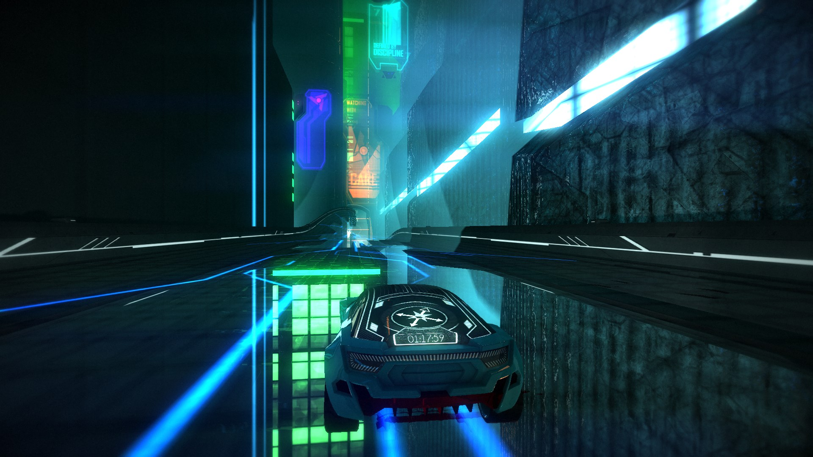
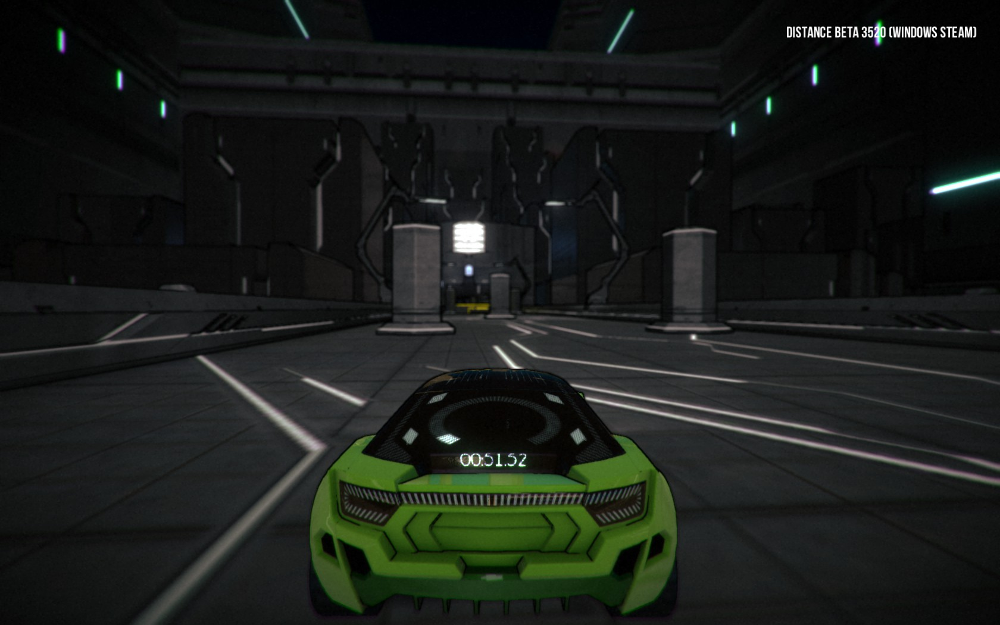
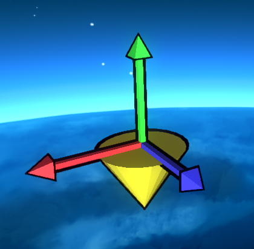
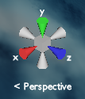
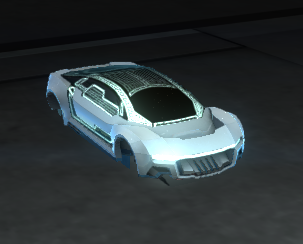

Introduction
The unofficial Distance level editor guidebook is an easy to access way of learning about the many tools available to you in the level editor. But besides describing many of the individual tools and functions in the editor. It also provides you with a step-by-step formula to creating your first level.That being said there are many different ways to approach level editing, and the one portrayed throughout this guide is just one of those many.
In this guide we will try to cover as many basic functions of the in-game editor as possible. Should you stumble upon something you think is missing, or outdated even. Please do not hesitate to contact us so we can update the guide accordingly.
Basic Level Creation
The Very Basics
Every sprint level needs a start point. Enter the "Roads" folder in the library and double click on EmpireStartZone. This will place the beginning of the track at the cursor.
Double click on EmpireSplineRoadStraight to add a straight piece of track. If you have a road piece selected, such as the EmpireStartZone, and you add a new road piece, it will automatically be connected to the end of the track.
Try adding other types of road pieces! You can change the orientation of a road piece by selecting it and pressing F.
Let's see how things look so far. Press ~ to test your level!
Checkpoints
First, right click the surface of a straight piece of road to move the cursor there. Right clicking any physical object moves the cursor to that point and rotates it so it's pointing to the surface of whatever you right-clicked.
Next, double click EmpireCheckpoint in the browser. We have a checkpoint now! Checkpoints reset the cooldown of the car, and placing these properly is an important part of the flow of a level.
Make sure the checkpoint is oriented properly! The orientation of the car when it respawns is dependent on the orientation of the checkpoint. If the checkpoint is backwards, the car will respawn backwards! If your checkpoint is facing the wrong way, use the rotation functions in the Transform menu. This is a really easy mistake to make (I do it all the time), so be careful about this.
Now, select the checkpoint and press Shift+A. This will attach the checkpoint to the track. This means if you move the track, the checkpoint will follow it. Also, you can press M and move the mouse to move the checkpoint along the track. This method is the best way to place objects while keeping their orientation relative to the road correct. You can also place more checkpoints by duplicating (Ctrl+D) the first one and moving them along the track (this way, you won't have to worry about backwards checkpoints).
Track Nodes
Add a new EmpireSplineRoadStraight to the end of the track. You'll notice that there are green rectangles marking the beginning and end of every road piece. These are track nodes. Select the node at the end of the piece you just added. You can manipulate these in any way that you can manipulate any other object!
There are three different tools you can use to transform objects: the move tool, the rotate tool, and the scale tool. You can switch between these by pressing W, E, and R, respectively. Try manipulating the nodes in different ways! The tracks will morph to fit the nodes properly. You can also manipulate the nodes between already-placed pieces of track, and it works the same way.
Multiple paths
Now we want to make the branching paths meet back up later without the track getting crooked. Duplicate the EmpireRoadTriSplit (Ctrl+D). Whenever you duplicate an object, you can move the mouse to move the new object around freely, but we don't want this, so press ESC to exit this mode. Instead, use the move gizmo to move the new EmpireRoadTriSplit in the direction of the track. Then, go to Tools>Rotate Object 180 around Y axis in the menu bar. This flips the object around so it's facing the other way. Move this object as far away from the track as you want.
You're going to be able to make your branching paths so they end up pretty close to the second TriSplit, but you won't be able to make them match up exactly. So let's connect some nodes together. To connect two nodes, select the node you want to move, and then hold shift and select the node you want to connect it to. Press ENTER to snap the nodes together. The node you selected first always moves to meet the node you selected second.
You can also select the road piece itself before selecting the first node. When you press enter, the entire road piece will move to so that the two nodes connect.
Obstacles
Set the cursor to a straight piece of track. Then, go to the "Infected obstacles" folder in the "obstacles" folder, and add a VirusLaserTriCircleRotating. If you want to move it to a curved piece of track, you can attach it to the road (Shift+A) and move it (M) wherever you like, just like with checkpoints.
If you test the level (~), you'll notice that the lasers rotate back and forth. You can change the speed of the rotation, among other things. Go back to the editor, and click the obstacle to select it. Then click the properties tab in the menu on the right-hand side. Scroll down to the section "RigidbodyAxisRotationLogic". There, you can change various aspects about how the lasers rotate. Try increasing AngularSpeed and RotationBounds. You can use the arrows on the side of the text field, click and drag, or enter a number directly. Then test the level. The lasers should be rotating farther and faster than before.
Every object is made up of different components, and these are what the different sections represent in the properties tab. The component system is just a result of Distance using the Unity engine, and it's not super important for the user. Just know that each section is a different "building block" of the object.
Uploading to Steam Workshop
Is your level done? It's time to upload it, then! First, check a few things:- Make sure your level has a proper title.
- Make sure you've marked the modes this level can be played in (you can find this in the level settings tab).
Visuals
Themes
Its a good idea to work with a theme in mind. There are lots of different ways to combine visual elements and create a unique theme. A level with a unique theme can go long way to making it a better overall level. But there are also loads of really good levels that work with some of the "basic" themes, or even the default theme of Distance! Here are 3 examples of levels with different themes. Broken Symmetry (official level)
Broken Symmetry (official level)

Contraband Delivery by Quargzon
Contraband Delivery uses posters with all the colors in the rainbow to simulate a real world city and its commercial billboards. Reflective surfaces are used to illustrate gigantic "office" buildings. It also uses dense fog (to simulate pollution), dark buildings, and a ton of decorational girders.

Cubic by Da Ham
Cubic uses its theme to convey a dystopian future vibe. It uses gray colors with all white-ish emitters and lights. Only one or 2 actual building models and a bright yellow color to capture the players attention whenever needed.As you can see a well thought out theme will not only make your level prettier. It can also help you tell a story or set the mood.
The best themes are the ones tailored for the level they are applied to. So take your time and get the theme just right, so that you feel it accomplishes what you want with the level.
Colors
Utilizing colours is an important part of level editing in Distance. All of the objects are made up of different components, some of which represent behavior and some of which are physical components. Many of the physical components have color properties you can change. The different properties are:- Color: This usually refers to the largest continuous part of the object. In the case of buildings its a good idea to set this to something thats easy on the eyes, as this will be one of the most prominent colors in your level.
- Spec color: This is the reflective value. Its layered on top of the "color" of the object and is only shown relative to what angle the player camera is looking at it from.
- Emit color: This slot often refers to a "glowing" part of the object, and its a really good place to enforce the bright and most prominent colors of your overall theme.
Decorations
Let's start by placing a lamp on the track. First move the cursor so it's on the side (or railing) of the track you want the lamp to be on. Add an EmpireLamp from the "Decorations" folder. Once you placed the lamp make sure it looks like its actually connected to the track! Use Alt + S to rotate it correctly, and use the movement gizmos to get the alignment just right. Once it looks like it's actually connected to the track, attach it (Shift + A). Once we have done this it will follow the road if we move it and we can easily duplicate it just like the checkpoints.
Once you attach an object to the track, you can press M and then F to flip it to the other side of the track. This is really useful for putting lamps on the other side of the track. Use this in combination with duplicating them to easily place lamps throughout the level.
Bulidings
Adding buildings is simple. First, go to the "Buildings" folder in the library. Once you've found the building you want to add, double click it to spawn it at the cursor location. You can then move and rotate the building to where you want them using the move, rotate, and scale gizmos.
When placing buildings try to think of them as a background in a painting. Try moving the camera so you see what the car will approximately see, and then place your buildings so they create a "scenery" for the car to drive through. Also, you can't have a lot of blank "canvas" in your painting. So try testing the track and look for empty spots you could fill out with buildings. Striking a good balance between too many or too few buildings is important!
Performance
Be careful when decorating your level. Putting too many objects in a level will make it lose FPS (frames per second). That's why it's generally a good idea to always have the frames per second counter showing. To enable it press ALT + F10.Loss of frames can happen for multiple reasons:
- Placing too many objects in a level overall. It won't matter if they are not always seen or within the visible draw distance. Too many objects will lower the FPS, so try to pace yourself.
- Too many objects in the visible frame. On the other hand loss of frames can also occur from having the game draw too much stuff at once. If you ever encountered that a level suddenly played at a smooth 60 FPS and then dropped to 20, that's because there was just a section of the level where there was too much stuff going on, but now that the game doesn't have to draw it anymore, everything is fine.
- Too many light sources. Light casts shadows (for those who have shadows enabled anyways), and having to draw too many shadows at once can impact your FPS.
- Too many anything technical. Generally objects that move or have a technical function (like lasers fx) will impact your FPS if you put too many of them in your level.
Level Design
Skips
Skips. The bane of casual players everywhere!Skips are a reality of virtually every Distance map. Unless your map is a straight line, there will be some way to cut corners and skip things. Understandably, this is disappointing to map makers, as people can skip over the track they worked so hard on. It's also disappointing to casual players who feel like they can't compete with people who know skips.
However, skips are not a bad thing! There is beauty and creativity in breaking the intended path of a track, and more importantly, you really can't prevent skips in Distance. The car has rotational thrusters, a powerful booster, and wings. If a player wants to go somewhere, there's nothing you can really do to stop them. So embrace the skips! Skips are fun and good.
That being said, there's still things you can and should do to prevent really egregious skips. Here are some good principles:
- Avoid having the track loop back on itself. This is just asking for someone to jump up onto the higher/lower track and skip a buch of stuff.
- Keep the track on a relatively straight path. That doesn't mean not to have turns, but the more curves you have, the more a player can cut across those curves. Keep the curves shallow.
- Uphill tracks are harder to skip than downhill tracks.
- Add shortcuts! Now they're intentional, so they're not skips.
- Don't turn off boosters or rotational thrusters to prevent skips. It'll make the level less fun, which isn't worth it, and CyclopsDragon will probably find a skip anyway.
Glossary
UI elements

The cursor: The cursor is where your mouse cursor or "hand" is placed in the level. Objects that you double click on in the library will be spawned at the cursor.

Level gizmo: The level gizmo can be used to control from which angle you see your level. By clicking on the different axes you can snap to that view angle. Clicking the grey box in the middle of the level gizmo will switch between the Perspective and Orthographic camera modes.
Objects

LevelEditorCarSpawner: The car spawner is primarily used to playtest your level. Keep in mind though, that this is only where you start when testing the level in the editor or when creating a stunt or tag level. Sprint and Challenge levels will always spawn the car at the EmpireStartZone object when you're actually playing the level.
Keyboard shortcuts
| Test level | ~ (tilde) |
| Move tool | W |
| Rotate tool | E |
| Scale tool | R |
| Copy | Ctrl+C |
| Paste | Ctrl+V |
| Copy color properties | Shift+C |
| Paste color properties | Shift+V |
| Copy light color properties | Ctrl+Shift+C |
| Paste light color properties | Ctrl+Shift+V |
| Undo | Ctrl+Z |
| Redo | Ctrl+Y |
| Duplicate | Ctrl+D |
| Create group | Ctrl+G |
| Ungroup | Shift+G |
| Attach to road | Shift+A |
| Move (attached objects) | M |
| Move to cursor's position | Shift+S |
| Align to cursor's rotation | Alt+S |
| Toggle node display | T |
| Zoom in on selected object | Middle-click |